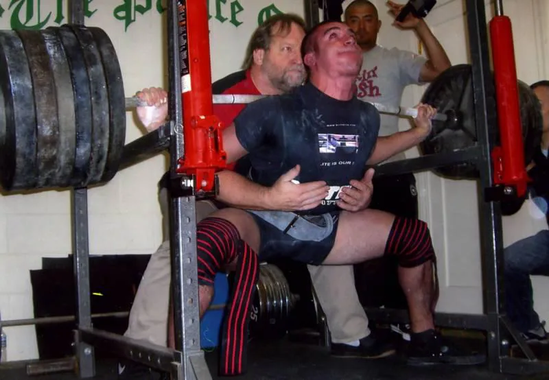

B93 · When to train, and when to back off - Part 1 of 2
“Should I train today? “If so, how much?” “If not, should I take today completely off, or do something else?” ?
Hi {first_name}, these are all questions I hear often and have even asked myself many times over the years.
If you’re like me, you’re hungry to reach the next level in your health and physical performance. Not surprisingly though, with this strong drive can come a few undesired consequences - especially if we are not aware of what our body is attempting to tell us along the way.
Here’s a personal story to help illustrate this...
I recall when I was about 19 years old training harder than ever for a Powerlifting competition. This was an in-house competition solely amongst the 18 members of our tight-knit basement Powerlifting team. We would run this competition once a year, and it was called “The Extravaganza.”
 605lb Squat at 19 yrs old, 178lbs bodyweight
Using a total from a cumulative one-repetition maximum on the Squat, Bench Press, and Deadlift (3 attempts given on each lift), we would account for bodyweight and use a formula to determine who was the pound-for-pound strongest in the gym.
I had been working my tail off for years and came as close as 2nd place the year prior. Winning the Palace Gym “Extravaganza” would have meant more to me than any large competition I would ever enter. We were like a family - the type of family that wants to take each-others heads off for the sake of winning and holding bragging rights for a year ?.
After a few brutal training cycles, I came in feeling ready. Programming, training sessions, the de-load phase, and weight cut were all dialed in. I ended up going 9 for 9 that day, finishing with a 605lb Squat, 430lb Bench Press, and 615lb Deadlift...winning my first ever Palace Gym Extravaganza.
I felt so high after the win, yet rather than taking some much-needed rest to allow my body and mind to reset, I took only 2-3 days off and then it was back at it - nearly at full steam.
What I later observed in myself was a pattern. Push hard for months, test myself, allow the bare minimum rest time, and then do it all over again. Over time this caught up with me. What followed not long after was discovering that I was in Stage 3 adrenal fatigue, had fungal and parasite infections, and a bacterial infection called H. Pylori - something that was causing painful stomach ulcers.
You see, on the surface, I appeared healthy, yet over time the continual grind without paying attention to the signs left me in a low state of vitality. It got so bad that I had to take nearly 6 months completely off from training to allow my body to heal as I worked to restore my gut health.
If it’s one thing I’ve learned over the years, it’s that the body is ALWAYS talking and dropping little (and sometimes big) clues for us to wake up to the reality of what is.
Today, in my coaching practice, I tend to see one of two people. The first is the under-trained and often injured client, and the second is the overtrained, and often bandaged-up person.
In this email, I’d like to focus on the overtrained person, and how to develop a more intuitive approach to training, as it relates closely to my own story above.
Specifically speaking to the topic of “when to train, and when to back off”, here are a few self-check-in questions you can ask yourself to help guide this:
While there are plenty more questions we could ask here, these 3 simple “yes or no” ones are plenty to get the ball rolling. When you test these on yourself, I suggest writing them down in a journal and making it a habit so that you can begin to identify patterns. The best time to ask yourself these questions is when you first wake in the morning.
It would be beneficial if you write them down and add in what type of training you did that day as well. You can get super detailed here with sets, reps, exercises, etc., or simply write if the training that day was easy/restorative, medium difficulty, or hard and taxing. The idea here is to log how you are feeling inside, and ultimately develop a better intuitive guide for what you choose to energize outside. In time, explore modifying your workouts based on the magnitude of how you are feeling in relation to each question, or a combination of questions. A sample of how I would approach the following two scenarios for myself, or a client, would be the following: Poor Day
Training Modification - Either take the day fully off and go for a 20-30 minute walk outside or cut the sets in half of what you would normally do in a training session.
Good Day
Training Modification - None, go get some!
I think we’ll stop here and continue back on this topic next week in Part II. We’ll look deeper into what happens when we miss out on listening to our body for too long, and the signs of overtraining begin.
Oh! And drop me a line if you experiment with the three questions as a part of your morning routine and you feel like sharing : )
Sending good vibes for happy and healthy training, Mike
P.S. You may recall a few weeks back I sent out a brief survey to better understand what programs and education you wanted to see most. Well, I took that to heart and have been working nearly full-time since then on creating an incredible program based off of just that. You see, an overwhelming majority of responses came in seeking a kettlebell workout program with a longevity focus. Now, this gets me SUPER excited! In many of my conversations with people since then, I have really been inspired to push the limit of what’s possible to create something unique, useful, and powerful for you in this regard. Stay tuned, as you’ll be the first to know what’s coming… In the meantime, follow me on Instagram @Mike.Salemi for more regular tips on healthy living and high performance. |